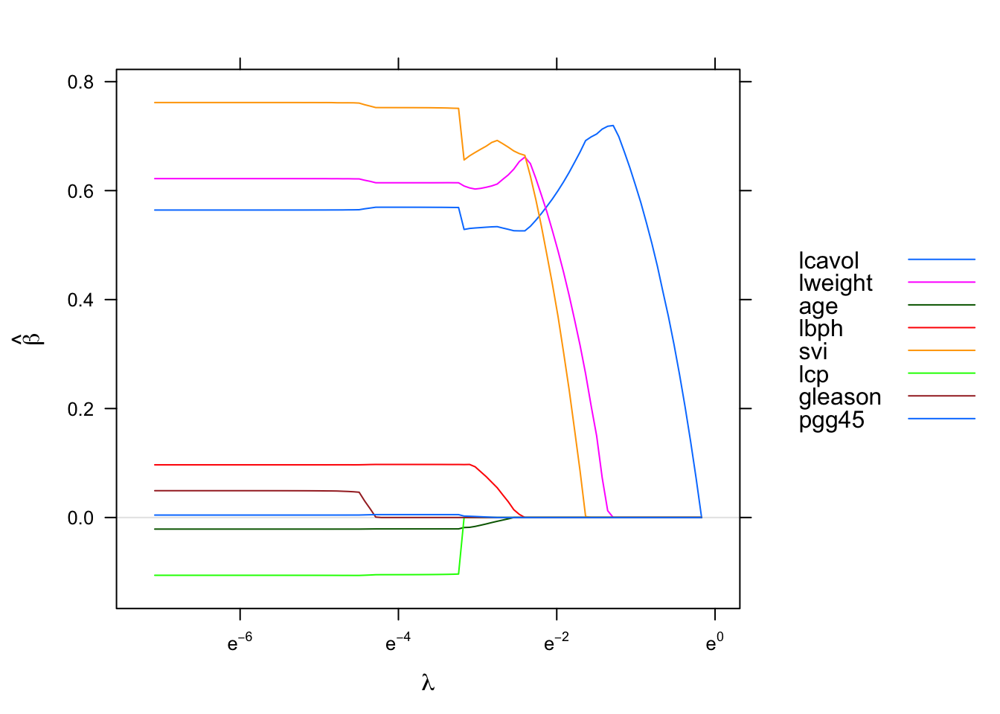
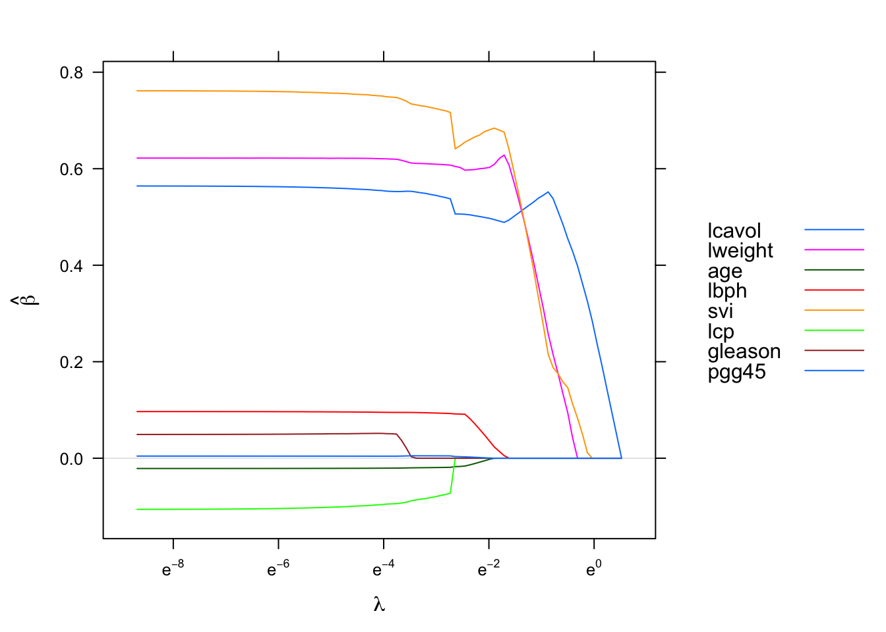
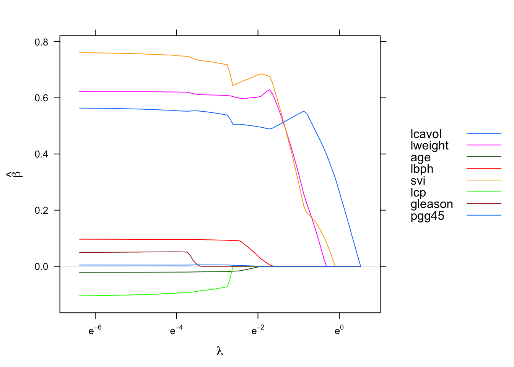
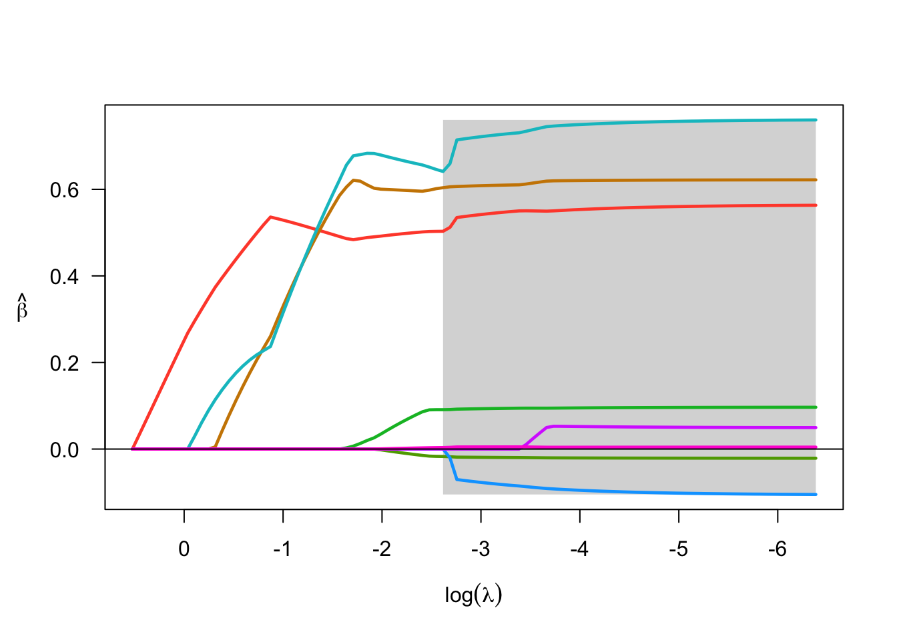
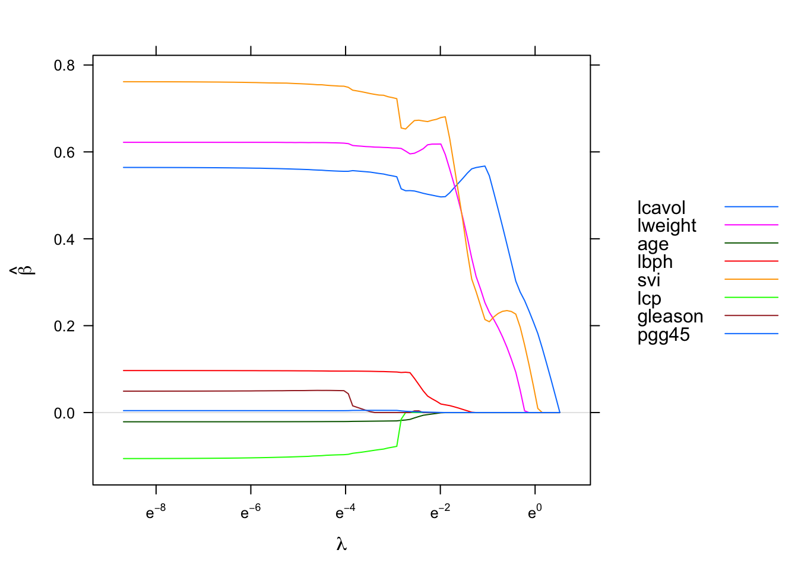
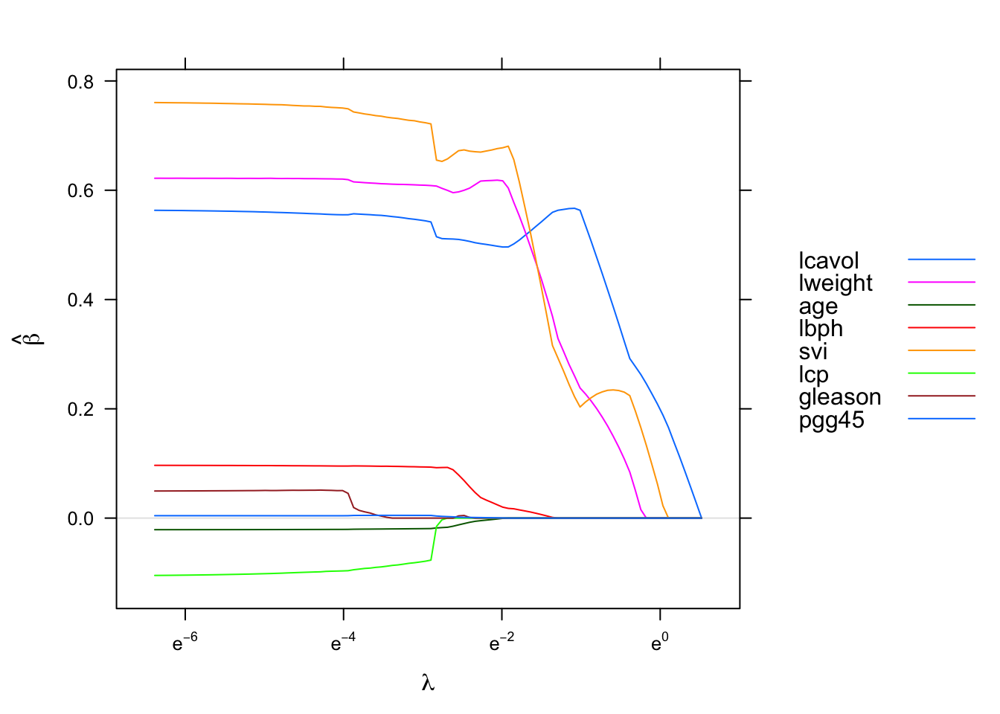
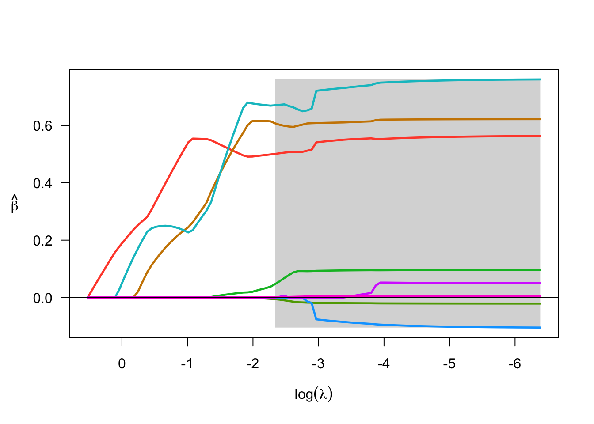

4 Nonconvex Penalty
4.1 Introduction
In addition to lasso, ridge and elastic net penalty, sgdnet also fits along regularization path for linear regression using nonconvex penalties, which are minimax concave penalty (MCP) (Zhang 2010) and smoothly clipped absolute penalty (SCAD) (Fan and Li 2001).
The ridge part in sgdnet use scale update \(\beta^{k + n} = \beta^{k} \prod _{i = 1}^{n}(1- \eta(1-\alpha) \lambda)\), where \(\lambda\) is the regularization strength, \(\alpha\) is elastic net mixing parameter and \(\eta\) is the step size. Other penalties are applied via a proximal step at each iteration from the coefficient \(\beta^{k+\frac{1}{2}}\) after the average gradient step. The proximal step solves a minimization problem:
where \(h_{\lambda}(\beta)\) is the penalty function.
4.2 MCP
The definition for minimax concave penalty for each element of coefficient \(\beta\) is given by:
\[\begin{equation} p_{\lambda, \gamma}(\beta_j) = \begin{cases} \lambda \beta_j - \frac{\beta_j^2}{2 \gamma} & \text{if} \,\, |\beta_j| \leq \gamma \lambda \\ \frac{1}{2} \gamma \lambda^2 & \text{otherwise} \end{cases}\end{equation}\]
where \(\lambda \geq 0\) is the regularization strength and \(\gamma > 1\) is a user defined nonconvexity parameter. We have \(h_{\lambda}(\beta) = p_{\alpha \lambda, \gamma}(\beta) + \frac{(1 - \alpha)\lambda}{2} ||\beta||_2^2\) if user wants to mix ridge with MCP in the proximal step by setting \(\alpha\) (B. Huang Jian. and Zhang 2016). The proximal operator for them is given by:
\[\begin{equation} \beta_j \leftarrow \begin{cases} \frac{ \Big (1 - \eta \alpha \lambda \Big )_{+} \beta_j}{1 + \eta (1-\alpha)\lambda-\frac{\eta}{\gamma}} & \text{if} \,\, |\beta_j| \leq \gamma \alpha \lambda \Big (1 + (1- \alpha) \lambda\Big ) \\ \frac{\beta_j}{1+\eta(1-\alpha)\lambda} & \text{otherwise}. \end{cases} \end{equation}\]
MCP begins by applying the same rate of penalization as lasso, but continuously relaxes that penalization until \(\beta_j\) becomes large (Breheny and Huang 2011). When \(\alpha = 0\), this becomes the proximal updates for ridge (Friedman, Hastie, and Tibshirani 2010). For MCP, sgdnet set the default noncovexity parameter \(\gamma\) to \(3\). Here we use the example from ncvreg to demostrate its usage.
data(prostate)
x <- prostate$x
y <- prostate$y
sgd_mcp <- sgdnet(x, y, non_convexity = 3, penalty = "MCP")
ncv_mcp <- ncvreg(x, y, gamma = 3, penalty = "MCP")
sgd_mnet <- sgdnet(x, y, non_convexity = 3, alpha = 0.5, penalty = "MCP")
ncv_mnet <- ncvreg(x, y, gamma = 3, alpha = 0.5, penalty = "MCP")
4.3 SCAD
Following the same notation, the definition for smoothly clipped absolute penalty for each element of coefficient \(\beta\) is given by:
\[\begin{equation} p_{\lambda, \gamma}(\beta_j) = \begin{cases} \lambda \beta_j & \text{if} \, \,|\beta_j| \leq \lambda\\ \frac{\gamma \lambda \beta_j - \frac{1}{2} (\beta_j^2 + \lambda^2)}{\gamma - 1} \gamma \lambda^2 & \text{if} \,\, \lambda < |\beta_j| \leq \gamma \lambda \\ \frac{\lambda^2 (\gamma^2 - 1)}{2(\gamma - 1)} & \text{therwise} \end{cases} \end{equation}\]
where \(\lambda \geq 0\) and \(\gamma > 2\). The proximal operator for SCAD (Wang 2016) of strength \(\alpha \lambda\), with ridge of strength \((1-\alpha)\lambda\) can be solved as:
\[\begin{equation} \beta_j \leftarrow \begin{cases} \frac{\Big ( 1-\eta \alpha \lambda \Big )_{+} \beta_j}{1+\eta(1-\alpha)\lambda} & \text{if} \, \,|\beta_j| \leq \alpha \lambda + \eta \alpha \lambda ( 1 + (1-\alpha) \lambda)\\ \frac{\Big ( 1 - \frac{\gamma}{ \gamma - 1} \eta \alpha \lambda \Big)_{+} \beta_j}{1- \frac{\eta}{\gamma - 1} + \eta (1- \alpha) \lambda} & \text{if} \,\, \alpha \lambda + \eta \alpha \lambda ( 1 + (1-\alpha) \lambda) < |\beta_j| \leq \gamma \alpha \lambda ( 1 + \eta (1 - \alpha) \lambda) \\ \frac{\beta_j}{1+\eta(1-\alpha)\lambda} & \text{therwise} \end{cases} \end{equation}\]
Similar to MCP, SCAD begins by applying lasso’s penalization rate, and reduces the rate to 0 as \(\beta_j\) gets away from 0. The difference is in the way to make this transition. sgdnet has a default nonconvexity parameter \(\gamma = 3.7\). It can be specified by the non_convexity variable in sgdnet() function.
sgd_scad <- sgdnet(x, y, non_convexity = 3.7, penalty = "SCAD")
ncv_scad <- ncvreg(x, y, gamma = 3.7, penalty = "SCAD")
sgd_snet <- sgdnet(x, y, non_convexity = 3.7, alpha = 0.5, penalty = "SCAD")
ncv_snet <- ncvreg(x, y, gamma = 3.7, alpha = 0.5, penalty = "SCAD")
Reference
Breheny, Patrick, and Jian Huang. 2011. “Coordinate Descent Algorithms for Nonconvex Penalized Regression, with Application to Biological Feature Selection.” The Annals of Applied Statistics 5 (1): 232–53.
Fan, Jianqing, and Runze Li. 2001. “Variable Selection via Nonconcave Penalized Likelihood and Its Oracle Properties.” Journal of the American Statistical Association 38 (2): 1348–60.
Friedman, Jerome, Trevor Hastie, and Robert Tibshirani. 2010. “Regularization Paths for Generalized Linear Models via Coordinate Descent.” Journal of Statistical Software 33 (1): 1–22.
Huang, Breheny, Jian., and Cun-Hui Zhang. 2016. “The Mnet Method for Variable Selection.” Statistica Sinica 26 (3): 903–23.
Wang, Zhu et al. 2016. “Penalized Count Data Regression with Application to Hospital Stay After Pediatric Cardiac Surgery.” Stat Methods Med Res 25 (6): 2685–2703.
Zhang, Cun-Hui. 2010. “Nearly Unbiased Variable Selection Under Minimax Concave Penalty.” The Annals of Applied Statistics 38 (2): 894–942.